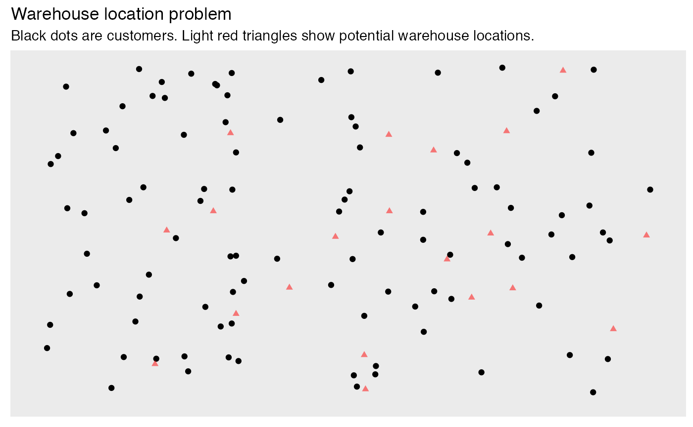
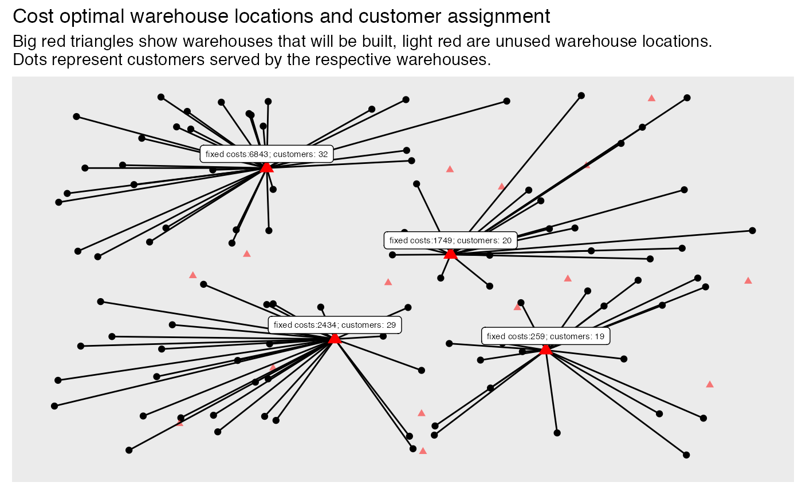

vignettes/milp-problem-warehouse-location.Rmd
milp-problem-warehouse-location.RmdIn this article we will look at the Warehouse Location Problem. Given a set of customers and set of locations to build warehoses the task is to decide where to build warehouses and from what warehouses goods should be shipped to which customer.
Thus there are two decisions that need to made at once: where and if to build warehouses and the assignment of customers to warehouses. This simple setting also implies that at least one warehouse must be built and that any warehouse is big enough to serve all customers.
As a practical example: you run the logistics for an NGO and want to regularly distribute goods to people in need. You identified a set of possible locations to set up your distribution hubs, but you are not sure where to build them. Then such a model might help. In practice however you might need to incorporate additional constraints into the model.
We start with a set of customers \(C = \{1 \ldots n\}\) and a set of possible warehouses \(W = \{1 \ldots m\}\) that could be built. In addition we have a cost function giving us the transportation cost from a warehouse to a customer. Furthermore there is a fixed cost associated with each warehouse if it will be built. This basic version of the warehouse location problem is adapted from the German Wikipedia page about the problem.
\[ \begin{equation*} \begin{array}{ll@{}ll} \text{min} & \displaystyle\sum\limits_{i=1}^{n}\sum\limits_{j=1}^{m}\operatorname{transportcost}_{i,j} \cdot x_{i, j} + \sum\limits_{j=1}^{m}\operatorname{fixedcost}_{j} \cdot y_{j}& &\\ \text{subject to} & \displaystyle\sum\limits_{j=1}^{m} x_{i, j} = 1 & i=1 ,\ldots, n&\\ & \displaystyle x_{i, j} \leq y_j, & i=1 ,\ldots, n & j=1 ,\ldots, m&\\ & x_{i,j} \in \{0,1\} &i=1 ,\ldots, n, & j=1 ,\ldots, m \\ & y_{j} \in \{0,1\} &j=1 ,\ldots, m& \end{array} \end{equation*} \]
The first thing we need is the data. In this article we will simply generate artificial data.
We assume the customers are located in a grid with euclidian distances:
set.seed(1234) grid_size <- 1000 n <- 100 customer_locations <- data.frame( id = 1:n, x = round(runif(n) * grid_size), y = round(runif(n) * grid_size) )
The warehouses are also randomly placed on the grid. The fixed cost for the warehouses are randomly generated as well with mean cost of 10,000.
m <- 20 warehouse_locations <- data.frame( id = 1:m, x = round(runif(m) * grid_size), y = round(runif(m) * grid_size) ) fixedcost <- round(rnorm(m, mean = grid_size * 10, sd = grid_size * 5))
The fixed costs to set up a warehouse are the following:
fixedcost## [1] 9043 6090 20291 13753 19121 10400 6843 2434 6820 11132 15068 11264
## [13] 4140 13344 1749 8171 8419 259 14600 6886Next step is to build a functions that takes a customer and a warehouse and returns the transport cost.
transportcost <- function(i, j) { customer <- customer_locations[i, ] warehouse <- warehouse_locations[j, ] round(sqrt((customer$x - warehouse$x)^2 + (customer$y - warehouse$y)^2)) } transportcost(1, 3)
## [1] 302Now let’s plot everything. Black dots are customers and red dots are possible warehouse locations.
library(ggplot2) p <- ggplot(customer_locations, aes(x, y)) + geom_point() + geom_point(data = warehouse_locations, color = "red", alpha = 0.5, shape = 17) + scale_x_continuous(limits = c(0, grid_size)) + scale_y_continuous(limits = c(0, grid_size)) + theme(axis.title = element_blank(), axis.ticks = element_blank(), axis.text = element_blank(), panel.grid = element_blank()) p + ggtitle("Warehouse location problem", "Black dots are customers. Light red triangles show potential warehouse locations.")

The model in ompr then looks like this:
library(ompr) library(magrittr) model <- MILPModel() %>% # 1 iff i gets assigned to warehouse j add_variable(x[i, j], i = 1:n, j = 1:m, type = "binary") %>% # 1 iff warehouse j is built add_variable(y[j], j = 1:m, type = "binary") %>% # maximize the preferences set_objective(sum_expr(colwise(transportcost(i, j)) * x[i, j], i = 1:n, j = 1:m) + sum_expr(colwise(fixedcost[j]) * y[j], j = 1:m), "min") %>% # every customer needs to be assigned to a warehouse add_constraint(sum_expr(x[i, j], j = 1:m) == 1, i = 1:n) %>% # if a customer is assigned to a warehouse, then this warehouse must be built add_constraint(x[i,j] <= y[j], i = 1:n, j = 1:m) model
## Mixed integer linear optimization problem
## Variables:
## Continuous: 0
## Integer: 0
## Binary: 2020
## Model sense: minimize
## Constraints: 2100We will use glpk to solve the above model.
library(ompr.roi) library(ROI.plugin.glpk) result <- solve_model(model, with_ROI(solver = "glpk", verbose = TRUE))
## <SOLVER MSG> ----
## GLPK Simplex Optimizer, v4.65
## 2100 rows, 2020 columns, 6000 non-zeros
## 0: obj = 0.000000000e+00 inf = 1.000e+02 (100)
## 101: obj = 5.223300000e+04 inf = 0.000e+00 (0)
## Perturbing LP to avoid stalling [398]...
## Removing LP perturbation [857]...
## * 857: obj = 3.322200000e+04 inf = 0.000e+00 (0) 3
## OPTIMAL LP SOLUTION FOUND
## GLPK Integer Optimizer, v4.65
## 2100 rows, 2020 columns, 6000 non-zeros
## 2020 integer variables, all of which are binary
## Integer optimization begins...
## Long-step dual simplex will be used
## + 857: mip = not found yet >= -inf (1; 0)
## + 857: >>>>> 3.322200000e+04 >= 3.322200000e+04 0.0% (1; 0)
## + 857: mip = 3.322200000e+04 >= tree is empty 0.0% (0; 1)
## INTEGER OPTIMAL SOLUTION FOUND
## <!SOLVER MSG> ----We solved the problem with an objective value of 33222.
suppressPackageStartupMessages(library(dplyr)) matching <- result %>% get_solution(x[i,j]) %>% filter(value > .9) %>% select(i, j)
The last step is to add the assignments to the previous plot we generated.
plot_assignment <- matching %>% inner_join(customer_locations, by = c("i" = "id")) %>% inner_join(warehouse_locations, by = c("j" = "id")) customer_count <- matching %>% group_by(j) %>% summarise(n = n()) %>% rename(id = j)
## `summarise()` ungrouping output (override with `.groups` argument)plot_warehouses <- warehouse_locations %>% mutate(costs = fixedcost) %>% inner_join(customer_count, by = "id") %>% filter(id %in% unique(matching$j)) p + geom_segment(data = plot_assignment, aes(x = x.y, y = y.y, xend = x.x, yend = y.x)) + geom_point(data = plot_warehouses, color = "red", size = 3, shape = 17) + ggrepel::geom_label_repel(data = plot_warehouses, aes(label = paste0("fixed costs:", costs, "; customers: ", n)), size = 2, nudge_y = 20) + ggtitle(paste0("Cost optimal warehouse locations and customer assignment"), "Big red triangles show warehouses that will be built, light red are unused warehouse locations. Dots represent customers served by the respective warehouses.")

The fixed costs for setting up the 4 warehouses is:
## [1] 11285Do you have any questions, ideas, comments? Or did you find a mistake? Let’s discuss on Github.